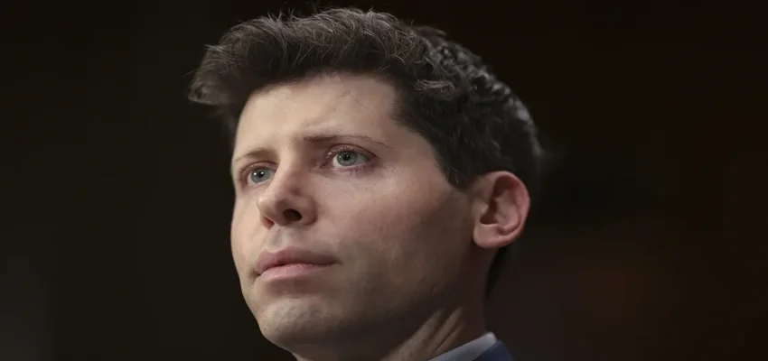

OpenAI officially announces Sam Altman has returned as CEO and Microsoft gains a non-voting board seat
Twelve days after OpenAI fired Sam Altman as CEO, the company formally announced that it has hired him back.
The company also said it has a new board, consisting of Chairman Bret Taylor, a former co-CEO of Salesforce; former Treasury Secretary Larry Summers; and Quora CEO Adam D’Angelo, who is the sole remaining director from the board that ousted Altman on November 17. Key stakeholder Microsoft has also gained a non-voting observer seat on the company’s board after the company had hired away Altman and former OpenAI Chairman Greg Brockman, only to lose them again to OpenAI a couple of days later – an outcome CEO Satya Nadella said he was fine with.
OpenAI called the new board “initial,” signaling that it will add more directors in the future.
Altman, in a company blog post, thanked the previous board that fired him for their contributions to the company. He also reinstated Mira Murati as the company’s chief technology officer. Murati was named interim CEO for a little over a day until the company announced that former Twitch CEO Emmett Shear would take over as CEO — a role he held for less than a week.
The chaos at OpenAI led the vast majority of the company’s 800 employees to threaten to quit unless Altman and Brockman were reinstated. A notable signatory was Ilya Sutskever, a former board member who had played a major role in Altman’s ouster. Sutskever later apologized for his actions, saying he regretted the decision.
Sutskever’s role as chief scientist at OpenAI appears to be unsettled. He was left off Altman’s leadership team list.
“I love and respect Ilya, I think he’s a guiding light of the field and a gem of a human being,” Altman wrote in the blog post. “I harbor zero ill will towards him. While Ilya will no longer serve on the board, we hope to continue our working relationship and are discussing how he can continue his work at OpenAI.”
Altman reserved most praise for Brockman, who is returning to the company after he quit. Altman said they will formalize on the company’s org chart the fact that the two are “partners in running this company.”
“For my part, it is incredibly important to learn from this experience and apply those learnings as we move forward as a company,” Altman wrote on X. “I welcome the board’s independent review of all recent events.”